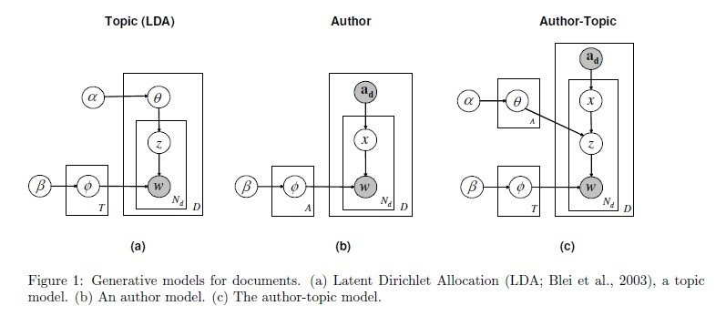

本文章是在阅读《集体智慧编程》过程中记录的一些对我有用的信息。
1. 相似度计算方式
1.1. 欧几里得距离
1.2. 皮尔逊相关系数
皮尔逊相关系数（Pearson Correlation）用于度量两个变量X和Y之间的相关（线性相关），其值介于-1到1之间。两个变量之间的皮尔逊相关系数定义为两个变量之间的协方差和标准差的商：
$$
\rho_{X,Y} = \frac{cov \left( X,Y \right)}{\sigma_X \sigma_Y} = \frac{E\left[\left( X - \mu x \right)\left( Y - \mu y \right) \right]}{\sigma_X \sigma_Y}
$$
详细内容参见Wikipedia
1.3. Jaccard Coefficient
Jaccard Coefficient(又称Jaccard Index)用于测量样本集之间的相似度，它定义为：集合交集与集合并集的商，公式如下：
$$
J\left( A, B \right) = \frac{\left|A \bigcap B \right|}{\left| A \bigcup B \right|}
$$
Jaccard Distance用于测量样本集之间的非相似度，它定义为：1 - Jaccard Coefficient，公式如下:
$$
{J}_{\delta }\left( A, B \right) = 1-J\left( A, B \right) = \frac{\left|A \bigcup B \right| - \left|A \bigcap B \right|}{\left| A \bigcup B \right|}
$$
详细内容参见Wikipedia
1.4. 曼哈顿距离
曼哈顿距离(Manhattan Distance)又称为出租车几何(Taxicab geometry)或方格线距离，它定义为：欧几里得空间的固定直角坐标系上两点所形成的线段对轴产生的投影的距离总和。
 上图中，红、蓝、黄线表示的曼哈顿距离都相等(12)，绿线表示欧几里得距离($6 * \sqrt{2} \approx 8.48$)。详情参见Wikipedia
上图中，红、蓝、黄线表示的曼哈顿距离都相等(12)，绿线表示欧几里得距离($6 * \sqrt{2} \approx 8.48$)。详情参见Wikipedia
更多的相似度计算公式可以参见Wikipedia
本文是LDA学习笔记系列文章的第4部分，主要介绍一些比较常见的LDA的扩展模型
4. LDA扩展
4.1. Author-Topic模型
阅读论文: Michal Rosen-Zvi et al. "The Author-Topic Model for Authors and Documents" 2004
实验数据: NIPS data set

从上图可以看出，Author-topic模型是LDA模型与Author模型的结合。LDA模型的文本生成过程中，是根据doc-topic的分布$\theta$来选择下一个词的主题;而在Author-Topic模型，是根据doc-topic的分布$\theta$以及Author的主题分布两个因素结合来确定下一个词的主题分布。
4.2. 动态主题模型
阅读论文: David M. Blei et al. "Dynamic Topic Models" 2006
LDA模型假设文档的所包含的主题顺序是可交换的，但是实际上，文档的顺序会反映主题的演化过程，如：新闻文章、邮件等，因此本文提出了一种动态的主题模型。

在动态主题模型中，文档集按时间顺序被分割成$t$个切片，每个切片内的子文档集都用主题模型建模。切片$t$内的topic-word分布$\beta_t$是由$t-1$切片内的topic-word分布$\beta{t-1}$演化而来的，$\beta{t,k}$表示切片$t$内主题$k$对应的topic-word分布。本文作者假定状态空间中的$\beta{t,k}$是通过链式高斯分布(chaining Gaussian distributions)进化的，数学公式表达如下：
$$
\beta{t,k} \mid \beta{t-1,k} \sim N \left( \beta{t-1,k}, \sigma2 I \right)
$$
在LDA模型中，doc-topic分布$\theta$是通过Dirichlet分布求得的。在动态主题模型中，作者用$\alpha$均值的逻辑正态(logistic normal with mean $\alpha$)来表达$\theta$分布中的不确定性，切片之间$\alpha$的进化同样假定满足链式高斯分布，数学公式表达如下：
$$
\alpha_t \mid \alpha{t-1} \sim N \left( \alpha{t-1}, \delta ^2 I \right)
$$
出于模型的复杂性考虑，作者没有在动态主题模型中考虑主题之间的关联关系，但是作者在他的另一篇文章Correlated topic
models中考虑了该问题。
参数评估时由于后验分布无法直接求解，所以论文中采用了Variational Kalman Filter和Variational Wavelet Regression这两种方法来做近似推理。
这篇文章是用于测试多人编辑的效果，多人编辑时，须在YAML头信息中包括字段author和author-url。author表示本文作者，author-url表示作者的个人主页（如：github主页，微博...）。若author字段没有，则默认读取site.author作为本文作者。
本文是LDA学习笔记系列文章之一，主要讲解Markov Chain Monte Carlo和Gibbs采样。在贝叶斯方法中，求解后验分布时需要对一个高维的函数进行积分，通常该积分的计算非常困难，因此产生了一些并非直接进行积分的方法，Markov Chain Monte Carlo就是其中之一。MCMC利用前一次的采样值来随机地产生下一次采样值，产生一个马尔科夫链。
3.1. 蒙特卡罗积分
蒙特卡罗方法最初是由物理学家发明的，它利用生成随机数来计算积分。假设我们需要计算一个复杂的积分：
$$
\int_ab h\left(x\right) dx
$$
如果我们能将$h\left(x\right)$分解成函数$f\left(x\right)$和一个定义在区间$\left(a,b\right)$上的概率密度函数$p\left(x\right)$的乘积，那么我们可以将上面的式子写成
$$
\int_ab h\left(x\right)dx = \int_ab f\left(x\right) p\left(x\right) dx = E{p\left(x\right)}\left[ f\left(x\right) \right]
$$
因此积分可以表示成函数$f\left(x\right)$在概率密度$p\left(x\right)$上的期望。如果我们从$p\left(x\right)$获得一系列随机变量$x_1,...,x_n$，则
$$
\int_ab h\left(x\right)dx = E{p\left(x\right)}\left[ f\left(x\right) \right] \approx \frac{1}{n} \sum{i=1}^n f\left(x_i \right)
$$
这个式子就被称为蒙特卡罗积分。蒙特卡罗积分可以用于近似贝叶斯分析中的后验分布(或边缘分布)，对于积分$I\left(y \right) = \int f\left(y \mid x \right) p\left(x\right) dx$，它可以近似于
$$
\hat{I} \left(y \right) = \frac{1}{n} \sum{i=1}^n f\left(y \mid x_i\right)
$$
其中$x_i$是通过概率密度$p\left(x\right)$生成的随机变量。蒙特卡罗标准误差可以用以下公式估计
$$
SE2\left[\hat{I} \left(y \right) \right] = \frac{1}{n} \left(\frac{1}{n-1} \sum_{i=1}^n \left(f\left(y \mid x_i\right) - \hat{I} \left(y \right) \right) \right)
$$
3.2. 重要性采样
在利用蒙特卡罗方法求复杂积分时，我们需要根据概率密度$p\left(x\right)$获取一系列的随机变量，但是计算机只能获得均匀分布的随机数。假设我们需要按照正态分布$N\left(0,1\right)$获得10个随机数，蒙特卡罗法是这样做的：
首先，在[0,1]区间上按均匀分布选取10个随机数，例如：
0.4505, 0.0838, 0.2290, 0.9133, 0.1524, 0.8258, 0.5383, 0.9961, 0.0782, 0.4427
接着，计算该正态分布的累积概率分布函数分别取上述值时对应的自变量值$x_i$，这样获得的$x_1,...,x{10}$值：
-0.1243, -1.3798, -0.7422, 1.3616, -1.0263, 0.9378, 0.0963, 2.6636, -1.4175, -0.1442
就是服从正态分布的10个随机数。
到此为止，我们知道：要求复杂函数的积分，我们可以通过蒙特卡罗方法用一系列随机数来近似；要获得一系列的随机数，我们要求累积概率分布函数。
那么既然概率密度函数都已经很难求了，我们如何能求累积概率分布呢？？这便引出来重要性采样(Importance Sampling)。
假设概率密度$s\left(x \right)$很容易求得，那么$p\left(x\right)$可以表示成
$$
p\left(x\right) = \frac{p\left(x\right)}{s\left(x \right)} s\left(x \right)
$$
因此可以得出
$$
\int f\left(x\right) p\left(x\right) dx = \int f\left(x\right) \left( \frac{p\left(x\right)}{s\left(x \right)} \right) s\left(x \right) dx = E{s\left(x\right)}\left[f\left(x\right) \left( \frac{p\left(x\right)}{s\left(x \right)} \right) \right]
$$
我们根据$s\left(x \right)$获取一系列随机数$x_1,...,x_n$，则上面的式子可以表示为
$$
\int f\left(x\right) p\left(x\right) dx \approx \frac{1}{n} \sum_{i=1}^n f\left(x_i \right) \left( \frac{p\left(x\right)}{s\left(x \right)} \right)
$$
3.3. 马尔科夫链
一阶马尔科夫链是指，时间$t+1$的状态只与时间$t$的状态有关，数学定义如下
$$
Pr\left(X{t+1}=s_j \mid X_t=s_i,...,x_0=s_k \right) = Pr\left(X{t+1}=s_j \mid X_t=s_i \right)
$$
马尔科夫链是通过它转移概率来定义的，用$P\left( i,j \right)$表示状态$s_i$通过一步转移到状态$s_j$的概率
$$
P\left( i,j \right)=Pr\left(X{t+1}=s_j \mid X_t=s_i \right)
$$
用$\pi_j\left(t \right)$表示时间$t$时状态为$j$的概率，则
$$
\pi_j\left(t \right)=Pr\left(X_t=s_j \right)
$$
用行向量$\vec{\pi}\left(t \right)$表示时间$t$时的状态分布，$\vec{\pi}\left(0 \right)$表示初始时的状态分布，通常$\vec{\pi}\left(0 \right)$只有一个分量为1，其余分量都为0。
时间$t+1$时的状态为$s_i$的概率可以通过Chapman-Kolomogrov equation计算获得
$$
\pi_i\left(t+1 \right)=Pr\left(X{t+1}=s_i \right)=\sum_k Pr \left(X_{t+1}=s_i \mid X_t=s_k\right)\cdot Pr\left(X_t=s_k\right)=\sum_k P\left(k,i\right)\pi_k\left(t \right)
$$
用$\mathbf{P}$表示概率转移矩阵，则该矩阵的$i,jth$元素表示从状态$i$转移到状态$j$的概率$P\left(i,j\right)$。很容易知道，该矩阵$\mathbf{P}$的行向量之和1。由此可得
$$
\vec{\pi}\left(t+1\right)=\vec{\pi}\left(t\right)\mathbf{P}
$$
当使用矩阵形式表示后，通过快速迭代可以得到
$$
\vec{\pi}\left(t+1\right)=\vec{\pi}\left(0\right)\mathbf{P}^{t+1}
$$
下面我们通过一个例子，来说明马尔科夫链的状态转移过程
假设状态空间为{下雨，天晴，多云}，并且天气变化符合马尔科夫过程。因此，明天的天气仅仅依赖今天的天气。假设：P(Rain tomorrow | Rain today)=0.5，P(Sunny tomorrow | Rain today)=0.25，P(Cloudy tomorrow | Rain today)=0.25，则状态转移矩阵的第一行为(0.5, 0.25, 0.25)，假设转移矩阵的剩余元素如下
$$
\mathbf{P}=
\begin{bmatrix}
5 & 0.25 & 0.25 \\
5 & 0 & 0.5 \\
5 & 0.25 & 0.5
\end{bmatrix}
$$
假设今天是天晴，即$\vec{\pi}\left(0\right)=\begin{pmatrix} 0 & 1 & 0 \end{pmatrix}$，则7天后的天气情况为$$\vec{\pi}\left(7\right)=\vec{\pi}\left(0\right)\mathbf{P}^7=\begin{pmatrix}0.4 & 0.2 & 0.4\end{pmatrix}$$相反，如果假设今天下雨，即$\vec{\pi}\left(0\right)=\begin{pmatrix} 1 & 0 & 0 \end{pmatrix}$，那么7天的天气情况为$$\vec{\pi}\left(7\right)=\vec{\pi}\left(0\right)\mathbf{P}^7=\begin{pmatrix}0.4 & 0.2 & 0.4\end{pmatrix}$$由此可见，经过足够时间的转移，期望天气与城市天气是独立的。换句话说，该天气转移的马尔科夫链达到了一个稳态分布(stationary distribution)。
正如上面的例子所示，马尔科夫链会达到一个稳态分布$\vec{\pi}^*$，此时的概率向量值与初始条件的是独立的。稳态分布满足以下条件$$\vec{\pi}^* = \vec{\pi}^* \mathbf{P}$$
3.4. Metropolis Hastings算法
正如重要性采样小节所述，利用蒙特卡罗方法求积分时主要问题是如何从复杂的概率分布$p\left(x\right)$获取样本数据，该问题的求解也是MCMC方法的根源。
假设我们要从分布$p\left(\theta\right)$获取样本数据，其中$p\left(\theta\right)=f\left(\theta\right)/K$，但是标准化常量K并不知道，并且也很难计算。Metropolis算法按如下过程生成样本序列：
1. 任意选取$\theta_0$，使得$f\left(\theta_0\right)>0$。
2. 使用当前的$\theta$值，根据jumping distribution$q\left(\theta_1, \theta_2\right)$采样一个候选点$\theta^*$。jumping distribution的返回值是根据前一个值$\theta_1$获得$\theta_2$的概率。jumping density唯一的限制是，它必须是对称的，即$q\left(\theta_1, \theta_2\right)=q\left(\theta_2, \theta_1\right)$。
3. 根据候选点$\theta^*$和当前点$\theta{t-1}$按照以下公式计算$$\alpha=\frac{p\left(\theta^*\right)}{p\left(\theta{t-1}\right)}=\frac{f\left(\theta^*\right)}{f\left(\theta_{t-1}\right)}$$标准化常量K在计算中被约去。
4. 如果计算出$\alpha>0$那么接受当前候选点$\theta^*$，并继续第2步；如果$\alpha < 0$，那么以概率$\alpha$接受候选点，否则拒绝，然后继续第2步。
参考资料
1. Markov Chain Monte Carlo and Gibbs Sampling
2. 如何理解重要性采样
LDA(Latent Dirichlet Allocation)模型是2003年由David M. Blei等人提出的一个主题模型。
本文将按以下目录结构组织LDA学习笔记系列文章：
第一部分：数学基础，这部分主要介绍文本分析方法中用到的数学基础，如：Gama函数、Beta函数和分布、Dirichlet分布、共轭分布、二项分布、多项分布、SVD(奇异值分解)等。
第二部分：文本建模，这部分主要介绍三种在LDA模型出现之前的文本建模方法，分别是：VSM(向量空间模型)、LSA(潜在语义分析模型)和pLSA(概率潜在语义分析模型)。
第三部分：LDA模型，这部分重点介绍LDA模型的概念、参数评估和推理，并与其它文本建模方法做简单比较。
第四部分：LDA扩展模型，这部分主要介绍一些基于LDA原始模型扩展的模型，以及LDA模型的现实应用。
学习LDA的途中，看到了许多很好的博文，对我的学习产生了很大的帮助，以下列举几个：
1. 统计之都LDA系列 - rickjin
2. SVD奇异值分解 - leftnoteasy
3. We Recommend a Singular Value Decomposition - David Austin
4. 主题模型小servey - 天青色等烟雨
5. LDA - 丕子
^